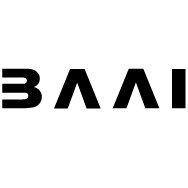

I am an MSc by Research student in Robotics, Computer Vision, Computer Graphics and Animation at IPAB, University of Edinburgh, supervised by Prof. Hakan Bilen. Prior to this, I obtained my Bachelor's degree in Software Engineering at Beihang University. I had wonderful time researching at BAAI, Huawei UKRD, King's College London and Beihang University.
You are always welcome to reach out for discussions or collaborations on interesting ideas! Feel free to contact me by sending an email.
- Feb. 2024 - One paper got accepted by CVPR 2024 🥳.
- Oct. 2023 - I will start my study at the University of Edinburgh.
- Jun. 2023 - I join BAAI as a research intern.
Research interest
I am broadly interested in research on 3D Vision and Graphics. Currently I work on 3D Reasoning.
Publications and preprints
Papers sorted by recency.
Zhipeng Du, Miaojing Shi, Jiankang Deng
Conference on Computer Vision and Pattern Recognition (CVPR 2024)
arXiv / code / page / bibtex
Zhipeng Du, Jiankang Deng, Miaojing Shi
AAAI Conference on Artificial Intelligence (AAAI 2023, Oral)
arXiv / code / bibtex
Zhipeng Du, Miaojing Shi, Jiankang Deng, Stefanos Zafeiriou
IEEE Transactions on Image Processing (TIP 2023)
arXiv / code / bibtex
|
University of Edinburgh |

Beijing Academy of AI |
Huawei London Research |
King's College London |
Beihang University |
|---|
Academic Services: reviewer of NeurIPS, ICML, IJCAI, TMM, TIP